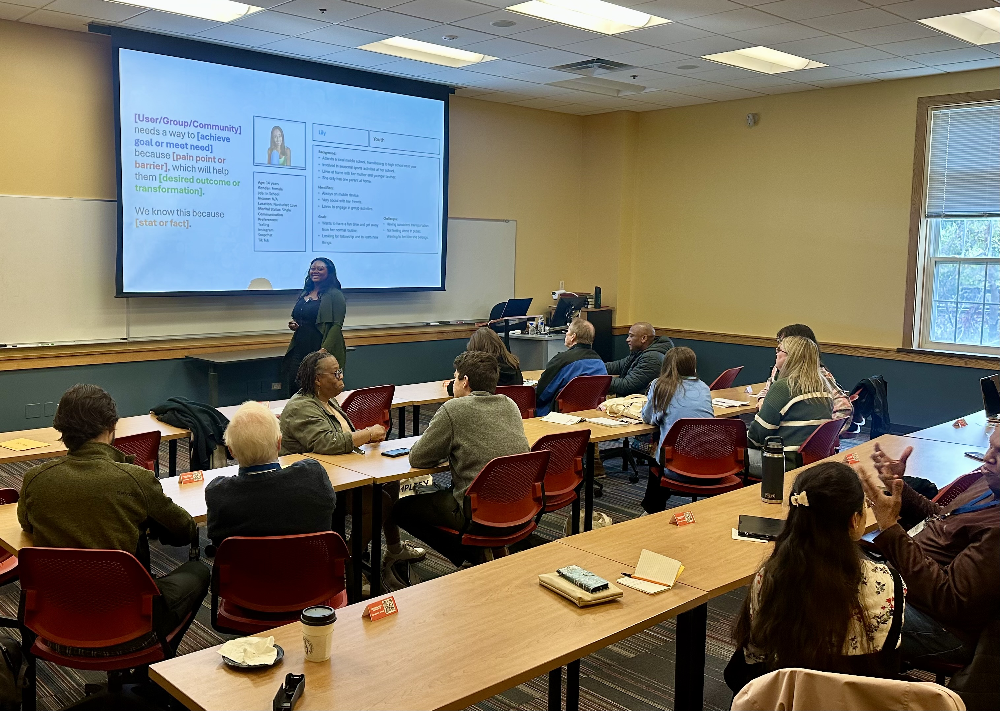
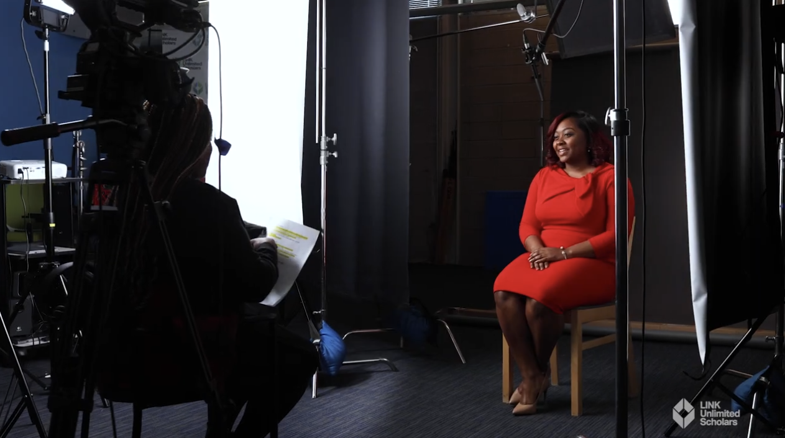
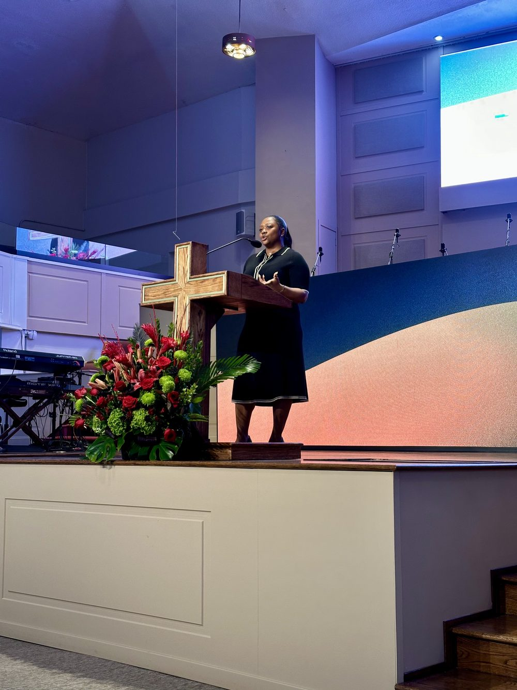
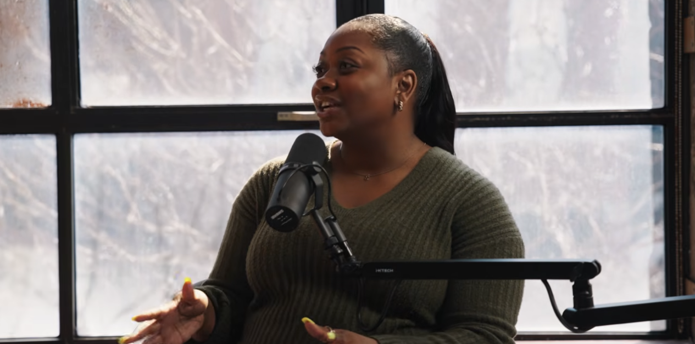

Speaking · Advisory · Facilitation
Helping leaders make technology decisions worthy of their people.
Hunter Guy speaks to executive teams, universities, and organizations navigating the biggest questions of the AI era — how to lead through it, who it should serve, and what it takes to build systems and teams that hold up.


Speaker bio
A speaker who builds what she talks about.
Hunter Guy is a strategic experience design leader, founder, minister, and educator operating at the intersection of technology, leadership, and human impact. Over a decade in product and experience design, she has driven more than $1M in incremental revenue, led design across three business units to a company-record NPS of 70%, and shipped award-winning platforms in fintech, edtech, and ecommerce. Today she serves as Principal UX Designer at Christianbook.com, leading digital experiences that reach millions of Christians worldwide.
As Co-Founder and CEO of Study Aloud — the company behind PathWEH, the world's first adaptive Bible study platform — she leads distributed teams across three continents and has taken a product from concept to the App Store, building tools that help people form lifelong habits of Scripture engagement.
She is also a licensed minister and discipleship leader with more than twelve years of ministry experience across two churches, now serving at Progressive Baptist Church in the Chicago area — teaching biblical literacy, developing discipleship curriculum, and equipping leaders to help people mature in their faith. Her work bridges theology and technology: not only how products should function, but how they form people.
Hunter is a sought-after speaker on the intersection of faith, artificial intelligence, design, and innovation — speaking at places such as the Legacy Conference, Wheaton College's Billy Graham Center, and Brown University, to name a few, and featured in Christianity Today for her voice on AI and ethics. Her work challenges leaders to think beyond digital engagement toward digital formation — from the conviction that technology should help people become who God created them to be.
Available for keynotes, executive workshops, panels, guest lectures, and advisory engagements.
Download the media kit →Signature topics
Talks built for rooms where decisions get made.
Every session is tailored to the audience — executive team, cohort, congregation, or classroom — and grounded in real operating experience, not theory.
Human-Centered AI for the Enterprise
Beyond the hype: how leaders build an AI strategy that starts with the humans it serves. What to adopt, what to resist, and how to make the call when the vendors are all shouting.
Ethical Frontiers: Leading Technology with Conviction
The framework Hunter teaches tech founders and professionals for making ethical decisions under pressure — where values, velocity, and business reality collide.
Building the Right Thing
Vision before backlog. How leaders decide what deserves to be built, align organizations around it, and steward the resources — people, capital, attention — that building well requires.
Systems & People: Making Strategy Real
Strategy fails at implementation. Drawing on a decade of leading distributed teams and multi-unit organizations, Hunter shows how structure, culture, and process have to move together for change to land.
Don't see the exact room you're planning? Every talk starts as a conversation about your audience.
Let's explore it together →On stage
Hunter in Action




Selected engagements
From the mainstage to the lecture hall.
- OngoingFaith + AI: Navigating Ethical Frontiers — Founder & lead facilitatorCohorts educating tech founders and professionals on ethical decision-making in technology
- OngoingProgressive Baptist Church — Licensed minister & discipleship leaderPreaching, biblical literacy teaching, and leader development
- OngoingUniversities, ministries & organizations — Guest speaker & advisorOn the impacts of integrating AI, and on leadership, systems, and people implementation
- 2026Brown University — Guest lecturer, Intro to Machine Learning"Responsibly Building with LLMs/AI"
- 2024–26Wheaton College — Amplify Conference — Workshop presenter, three consecutive yearsIncluding "Digital Shepherds: Discipling with AI Leverage" (2026)
- 2025FaithWorks Conference — Apostolic Faith Church — Preacher"The User Experience of Church"
- 2025Legacy Conference — SpeakerOn faith, technology, and the future of discipleship
- 2025Christianity Today — Featured voice"Meet the Christian Engineers Helping to Shape AI" — on AI, faith, and shaping technology ethically
- 2024Talents × Tech Conference — Host (Study Aloud) & mainstage speakerA one-day tech conference about God — talents for God's glory
- 2023The Point of Reference Podcast — Guest, "Being Before Going"
- 2020University of Illinois Urbana-Champaign — Guest lecturer, Intro to UI/UX"Making Sense of UX Research"
- 2019Women in Technology Luncheon — Keynote speaker, UIUC Research Park
- 2019–20COUNTRY Financial — Multicultural Resource Group presenter & event leader; founder of high school innovation days at the UIUC DigitaLab
Full speaking record
One voice, many industries.
From enterprise AI summits to university lecture halls to ministry pulpits — the range is the point. Influence that travels across rooms is influence that translates.
Conferences & summits
AI Summit 2024 — "Human-Centered AI for Enterprises," Beyond the Hype speaker series
Talents × Tech Conference 2024 — Hosted by Study Aloud · Mainstage speaker, #TXT24
Faith + AI: Navigating Ethical Frontiers — Founder & lead facilitator, ongoing cohorts for tech founders and professionals
Lectures & keynotes
Brown University — Guest lecturer, Intro to Machine Learning: "Responsibly Building with LLMs/AI" (2026)
Women in Technology Luncheon — Keynote, "Girls Design Too," UIUC Research Park (2019)
University of Illinois Urbana-Champaign — Guest lecturer, Intro to UI/UX: "Making Sense of UX Research" (2020)
UIUC DigitaLab — Founder & organizer, high school innovation days introducing students to technology careers (2020)
Churches & faith-tech
Wheaton College — Amplify Conference — Workshop presenter, 2024, 2025 & 2026
Progressive Baptist Church — Licensed minister: preaching, biblical literacy teaching, and discipleship curriculum
FaithWorks Conference — Preacher, "The User Experience of Church," Apostolic Faith Church (2025)
Christianity Today — Featured voice, "Meet the Christian Engineers Helping to Shape AI" (2025)
Ministries & congregations — Ongoing preaching and teaching on Scripture, technology, leadership, and faithful innovation
Faith-tech founder cohorts — Leading ethical decision-making curriculum for builders in the faith space
Enterprise rooms & airwaves
COUNTRY Financial — Multicultural Resource Group presenter & event leader (2019–20)
The Point of Reference Podcast — Guest, "Being Before Going" (2023)
Industry showcases — Multi-state product presentations and partner engagements since 2016
On the airwaves
Podcast appearances.

- 2023The Point of Reference Podcast — Guest"Being Before Going" — on identity, purpose, and leading from who you are
- 2026Legacy Disciple Podcast — Guest"What Does God Think of AI?"
- 2023–24Faith Declassified: Career and Tech Survival Guide — Co-hostOn faith, career, and navigating technology with conviction
Book Hunter
Bring a builder's voice to your next room.
Keynotes, executive workshops, panels, guest lectures, and cohort facilitation — tailored to your audience and the decisions in front of them.